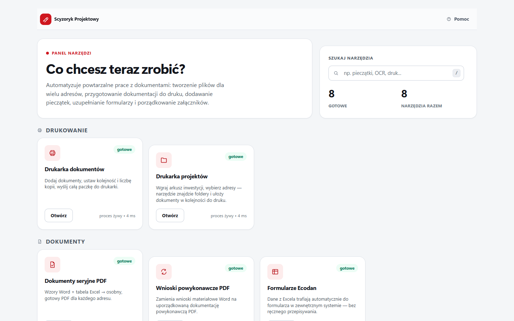
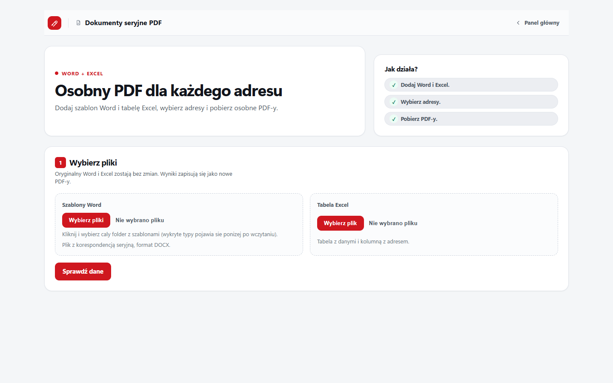
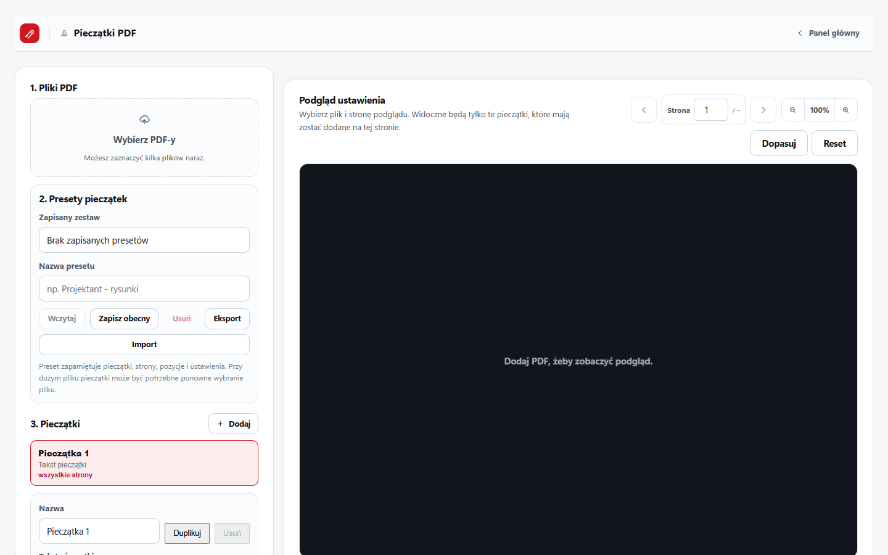
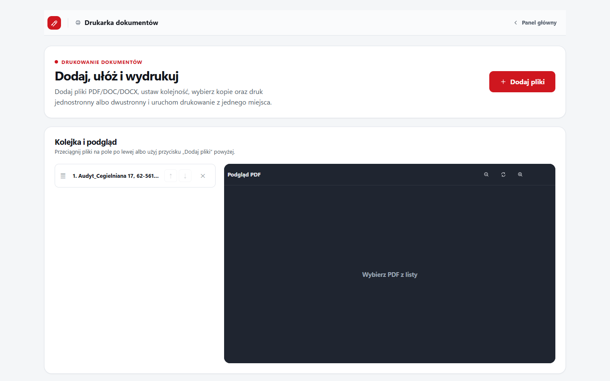
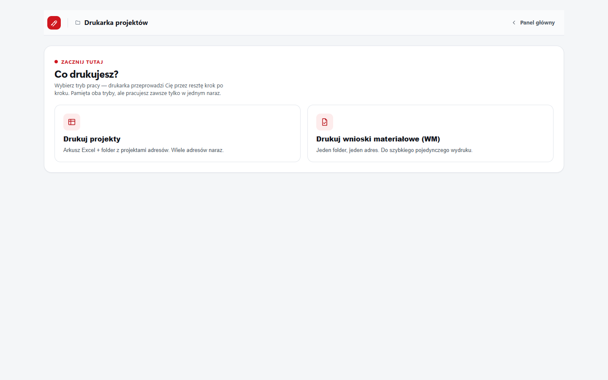
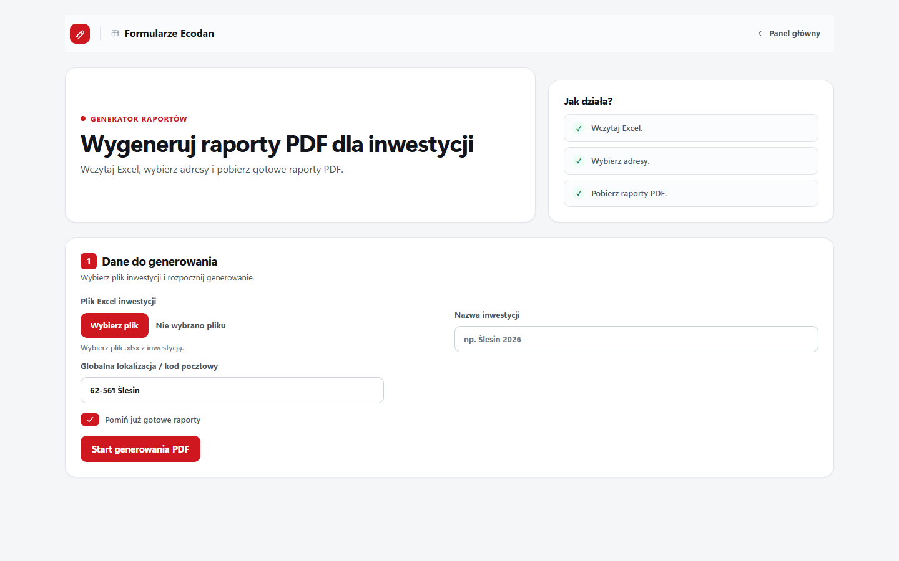
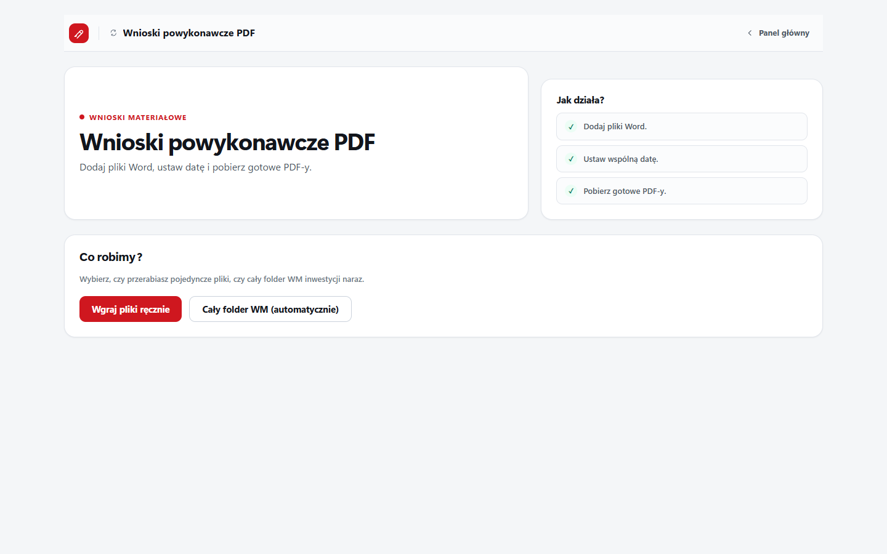
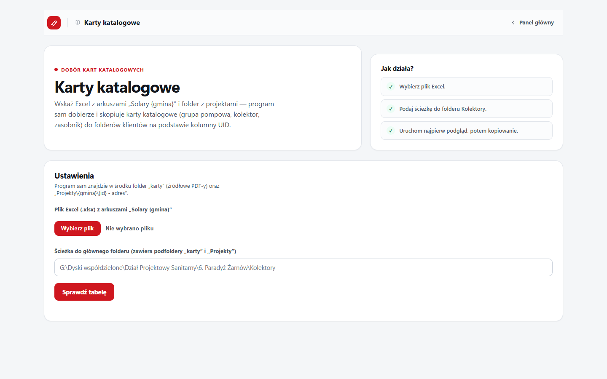
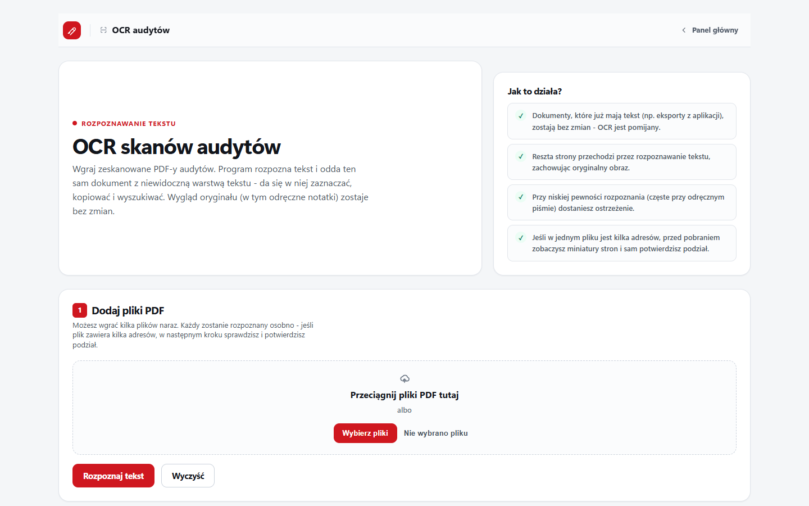

Scyzoryk Projektowy
Osiem narzędzi do powtarzalnej pracy biurowej: dokumenty seryjne, pieczątki, drukowanie, projekty, formularze Ecodan, dokumentacja powykonawcza, karty katalogowe i OCR audytów. Wszystko działa z jednego panelu i prowadzi krok po kroku od plików źródłowych do gotowego wyniku.
Użytkownik dostaje jeden plik ScyzorykProjektowy-Setup-....exe. Nie instaluje osobno Node.js, Playwrighta ani klucza OCR. Po prawidłowej instalacji OCR audytów jest skonfigurowany i gotowy do pracy.
Uruchom instalator EXE. Pozostaw domyślny folder, ikonę na pulpicie oraz — jeśli potrzebujesz — autostart przy logowaniu.
Poczekaj, aż instalator przygotuje wszystkie składniki. Podczas instalacji wymagane jest połączenie z internetem.
Uruchom skrót Scyzoryk Projektowy. Panel otworzy się w przeglądarce pod adresem http://127.0.0.1:3000.
Wybierz kafelek narzędzia. Status gotowe oznacza, że moduł odpowiada i można go otworzyć.
Nowszy instalator można uruchomić bez wcześniejszego odinstalowania programu. Ustawienia i dane robocze są przechowywane poza katalogiem programu w %LOCALAPPDATA%\ScyzorykProjektowy\Data.
Windows: Ustawienia → Aplikacje → Zainstalowane aplikacje (albo Panel sterowania → Programy i funkcje) → znajdź Scyzoryk Projektowy → Odinstaluj. Można też uruchomić unins000.exe bezpośrednio z folderu instalacji. Dane robocze w %LOCALAPPDATA%\ScyzorykProjektowy\Data nie są usuwane automatycznie — jeśli chcesz je też skasować, zrób to ręcznie po deinstalacji.

Panel główny aktualnej wersji — kafelki narzędzi, wyszukiwarka, statusy i przycisk Pomoc.
Najważniejsze zasady
- Przy nowej inwestycji lub nowym wzorze najpierw wykonaj próbę na jednym adresie.
- Pliki z Dysku Google ustaw jako dostępne offline. Sam skrót chmurowy może nie wystarczyć Wordowi i skryptom.
- Nie uruchamiaj dwóch dużych serii drukowania jednocześnie. Scyzoryk ma wspólną blokadę druku.
- Nie przenoś ani nie edytuj plików źródłowych podczas trwającego zadania.
- Dokumenty seryjne i Wnioski powykonawcze wymagają lokalnie zainstalowanego i aktywowanego Microsoft Worda.
Dokumenty seryjne PDF
Z folderu wzorów Word i tabeli Excel tworzy osobny, gotowy PDF dla każdego wybranego adresu.

Aktualny ekran — wybór folderu wzorów, dokumentów, Excela, arkusza i adresów.
Zanim zaczniesz
- Wskaż cały folder wzorów DOCX, nie pojedynczy plik.
- Excel powinien zawierać wymagane kolumny
ID,AdresiBeneficjentw każdym wybranym arkuszu. - Wzory muszą być prawdziwymi dokumentami korespondencji seryjnej, zapisanymi z podpiętym źródłem danych.
- Dla różnych mocy lub wariantów można przygotować osobne wzory i arkusze. Program pokazuje wykryte typy dokumentów i pozwala wybrać, które wygenerować.
Krok po kroku
- Wybierz folder wzorów i zaznacz potrzebne rodzaje dokumentów.
- Dodaj plik Excel i kliknij Sprawdź dane.
- Wybierz właściwy arkusz oraz — gdy jest potrzebna — kolumnę wariantu, np. pojemność zasobnika.
- Zaznacz adresy, ustaw opcjonalny przedrostek nazwy i kliknij Utwórz PDF-y.
- Obserwuj postęp. Po zakończeniu pobierz pojedyncze PDF-y albo całą paczkę ZIP.
Nie zmieniaj wzorów ani Excela podczas zadania. Word działa w osobnej, niewidocznej instancji; prywatne dokumenty Worda użytkownika nie powinny być zamykane przez program.
Najczęstsze problemy
- Brakuje wymaganych kolumn
- Sprawdź nagłówki w aktualnie wybranym arkuszu. Program waliduje arkusz ponownie przed generowaniem.
- Wzór został pominięty
- Otwórz go w Wordzie, podłącz właściwe źródło korespondencji seryjnej i zapisz ponownie.
- Jeden adres zakończył się błędem
- Reszta partii może zakończyć się poprawnie. Popraw wskazany wiersz lub wzór i ponów tylko brakujące dokumenty.
Pieczątki PDF
Dodaje jedną lub wiele pieczątek do PDF-ów z podglądem położenia, zakresu stron i wyglądu.

Aktualny ekran — pliki PDF, lista pieczątek, ustawienia oraz podgląd dokumentu.
Krok po kroku
- Dodaj jeden lub kilka plików PDF.
- Wczytaj zapisany preset albo kliknij Dodaj, aby utworzyć nową pieczątkę.
- Ustaw treść lub plik pieczątki, zakres stron, pozycję, rozmiar, obrót i przezroczystość.
- Sprawdź podgląd na wybranej stronie.
- Kliknij Dodaj pieczątki i pobierz. Przy wielu plikach otrzymasz ZIP.
Najczęściej używane układy można zapisywać, eksportować i importować. Oryginalne PDF-y nie są nadpisywane.
Najczęstsze problemy
- Brak pliku lub pieczątki
- Przed uruchomieniem dodaj co najmniej jeden PDF i jedną aktywną pieczątkę.
- Nieprawidłowy PDF
- Plik może być uszkodzony albo mieć tylko zmienione rozszerzenie.
- Pieczątka wypada poza stronę
- Sprawdź podgląd i zmniejsz ramkę lub przesuń ją w bezpieczne miejsce.
Drukarka dokumentów
Układa PDF-y i dokumenty Word w jedną kolejkę oraz wysyła serię do wybranej drukarki.

Aktualny ekran — kolejka dokumentów, podgląd, drukarka, kopie i tryb dupleksu.
Krok po kroku
- Kliknij Dodaj pliki albo przeciągnij PDF, DOC i DOCX.
- Ułóż dokumenty w wymaganej kolejności i sprawdź PDF-y w podglądzie.
- Wybierz drukarkę, liczbę kopii, układ kopii i druk jednostronny lub dwustronny.
- Sprawdź podsumowanie i kliknij Drukuj.
- Poczekaj na zakończenie całej kolejki. Nie uruchamiaj w tym czasie druku z drugiego modułu.
Scyzoryk zapisuje poprzedni tryb dupleksu drukarki i przywraca go po zakończeniu serii, również gdy wystąpi błąd.
Najczęstsze problemy
- Drukowanie jest zajęte
- Inny moduł lub karta już korzysta ze wspólnej blokady. Poczekaj na zakończenie poprzedniej serii.
- Nie widać drukarki
- Sprawdź, czy jest zainstalowana i widoczna w ustawieniach Windows.
- DOCX nie drukuje się
- Sprawdź, czy Microsoft Word jest zainstalowany i aktywowany.
Drukarka projektów
Znajduje dokumentację dla adresów z Excela albo skanuje folder WM, układa pliki i przygotowuje serię do druku.

Aktualny ekran — wybór trybu: projekty z Excela albo wnioski materiałowe WM.
Tryb „Drukuj projekty”
- Wgraj Excel inwestycji i wybierz właściwą zakładkę.
- Zaznacz adresy bez odbioru i bez rezygnacji.
- Wklej ścieżkę folderu bazowego z podfolderami adresów i kliknij Znajdź projekty.
- Sprawdź kolejność: strona tytułowa, opis techniczny, rysunki i załączniki.
- Pozycje oznaczone jako wariant, konflikt, niedopasowane albo dopasowane tylko po kolejności wymagają ręcznego sprawdzenia. Program nie zaznacza ich automatycznie.
- Zatwierdź dokumenty, wybierz drukarkę i uruchom serię.
Tryb „Wnioski materiałowe (WM)”
- Wskaż folder WM jednego adresu.
- Opcjonalnie zaznacz wariant powykonawczy dok.pod.
- Kliknij Skanuj folder WM, sprawdź kolejność i wydrukuj.
Program skanuje podfoldery do określonej głębokości, ignoruje pliki tymczasowe i nie przechodzi przez dowiązania, junctiony ani reparse points. PDF zastępuje DOCX tylko wtedy, gdy oba pliki znajdują się w tym samym folderze względnym.
Formularze Ecodan
Na podstawie Excela przygotowuje raporty z konfiguratora Ecodan dla wybranych adresów.

Aktualny ekran — dane inwestycji, wybór adresów, postęp oraz pobieranie wyników.
Krok po kroku
- Dodaj plik Excel inwestycji.
- Uzupełnij nazwę inwestycji i globalną lokalizację lub kod pocztowy.
- Po wczytaniu listy zaznacz adresy do wygenerowania.
- Pozostaw zaznaczone Pomiń już gotowe raporty, jeżeli nie chcesz ponawiać istniejących wyników.
- Kliknij Start generowania PDF i obserwuj postęp zadania.
- Po zakończeniu pobierz ZIP z wynikami.
Każdy wynik zawiera wyłącznie pierwsze trzy strony, ponieważ tylko one są potrzebne. Dotyczy to również istniejących raportów wykrytych przy pomijaniu gotowych plików.
Najczęstsze problemy
- Pojedynczy adres zakończył się błędem
- Reszta zadania jest kontynuowana. Popraw dane i ponów tylko brakujące adresy.
- Zerwana sesja lub wiele błędów strony
- Sprawdź połączenie z internetem i spróbuj ponownie później.
- Ostrzeżenie o ścieżce wyniku
- Przeczytaj komunikat pokazany w interfejsie i wybierz poprawny katalog docelowy.
Wnioski powykonawcze PDF
Przerabia firmowe wnioski materiałowe Word na dokumentację powykonawczą i zapisuje PDF-y.

Aktualny ekran — wgrywanie ręczne lub cały folder WM, data, nazwy i zadanie w tle.
Wgrywanie ręczne
- Wybierz Wgraj pliki ręcznie i dodaj pliki DOCX.
- Ustaw datę albo opcję tylko miesiąc i rok.
- Ustaw przedrostek nazwy PDF i kliknij Utwórz PDF-y.
- Obserwuj trwałe zadanie w tle. Możesz je anulować i wrócić do jego stanu po odświeżeniu.
- Pobierz wyniki po zakończeniu.
Cały folder WM
- Wybierz Cały folder WM (automatycznie).
- Wklej ścieżkę folderu, ustaw datę i kliknij Skanuj folder.
- Sprawdź znalezione kategorie oraz pliki już posiadające wersję powykonawczą.
- Kliknij Przerób zaznaczone i zapisz w folderach.
Program podmienia rozpoznane frazy i sekcje. Najpierw wykonaj próbę na jednym pliku, zwłaszcza po zmianie szablonu WM.
Karty katalogowe
Dobiera karty katalogowe na podstawie danych i UID w Excelu, a następnie kopiuje je do folderów klientów.

Aktualny ekran — Excel, folder główny, podgląd dopasowań oraz uruchomienie kopiowania.
Krok po kroku
- Wybierz Excel zawierający arkusze Solary {gmina}.
- Wklej ścieżkę głównego folderu Kolektory, który zawiera foldery
kartyiProjekty. - Kliknij Sprawdź tabelę. To podgląd — pliki nie są jeszcze kopiowane.
- Sprawdź gminę, ID, adres, UID, folder oraz status dopasowania.
- Jeżeli podgląd jest prawidłowy, kliknij Uruchom dobór kart.
Wartości takie jak NIE, 0, - i brak nie są traktowane jako rezygnacja. Wiersz jest pomijany tylko wtedy, gdy flaga rzeczywiście oznacza rezygnację albo brakuje danych wymaganych do doboru.
Najczęstsze problemy
- Nie znaleziono folderu klienta
- Sprawdź numer LP i nazwę folderu w odpowiedniej gminie.
- Nierozpoznany UID lub rozmiar
- Popraw wartość w Excelu albo ręcznie uzupełnij brakującą kartę.
- Brakuje pliku źródłowego
- Sprawdź zawartość folderu
kartyi nazewnictwo dokumentów.
OCR audytów
Rozpoznaje tekst w zeskanowanych audytach, dzieli pliki na adresy, pozwala sprawdzić pola i tworzy PDF-y z warstwą tekstową oraz opcjonalny Excel.

Aktualny ekran — dodawanie skanów, podział na adresy, kontrola pól i zapis wyników.
W przetestowanym instalatorze nie trzeba ustawiać klucza, zmiennych środowiskowych ani kopiować konfiguracji. OCR korzysta z konfiguracji dołączonej podczas bezpiecznego builda wewnętrznego.
Krok po kroku
- Dodaj jeden lub kilka zeskanowanych PDF-ów i kliknij Rozpoznaj tekst.
- Sprawdź proponowany podział na adresy. Popraw granice i nazwy, jeżeli dokument został źle rozdzielony.
- Wybierz rodzinę: Pompy ciepła, Solary albo Kotły. Wzór gminy może zostać dobrany automatycznie lub wskazany ręcznie.
- Dla każdego niepewnego pola wpisz wartość i naciśnij Enter. Gdy pole naprawdę jest puste, kliknij Brak w oryginale.
- Opcjonalnie podaj ścieżkę nowego Excela. Istniejący plik wymaga jawnego potwierdzenia nadpisania; zapis jest wykonywany atomowo z kopią bezpieczeństwa.
- Kliknij Zapisz i pobierz. Oryginalny PDF pozostaje bez zmian.
Strony wymagające rozpoznania są wysyłane do Google Document AI. Nie uruchamiaj tej samej dużej paczki wielokrotnie bez potrzeby, ponieważ zużywa to limit i generuje koszt.
Najczęstsze problemy
- Niska pewność rozpoznania
- Sprawdź fragment skanu i popraw wartość ręcznie.
- Nie da się wyeksportować Excela
- Najpierw rozstrzygnij wszystkie pola wymagające kontroli. Sam PDF może pozostać dostępny.
- OCR nie odpowiada
- Sprawdź internet. W gotowym instalatorze nie wykonuj ręcznej konfiguracji klucza — zgłoś problem wraz z komunikatem.
Instrukcja i rozwiązywanie problemów
Przycisk Pomoc na panelu głównym otwiera dokładnie tę lokalną instrukcję, dostępną także bez internetu.
Instrukcja zachowuje rozbudowany układ z bocznym spisem treści i aktualnymi zrzutami wszystkich narzędzi. Można ją również wydrukować do PDF z przeglądarki.
Gdy coś nie działa
- Kafelek długo pokazuje „uruchamianie”
- Odczekaj kilkanaście sekund. Jeżeli status się nie zmieni, zamknij Scyzoryk i uruchom ponownie skrótem z pulpitu.
- Panel się nie otwiera
- Sprawdź adres
http://127.0.0.1:3000, a następnie uruchom ponownie skrót. Nie instaluj ręcznie Node.js ani paczek npm. - Word nie tworzy PDF
- Sprawdź instalację i aktywację Microsoft Worda oraz dostępność plików offline.
- Plik z Dysku Google nie jest znaleziony
- Ustaw go jako dostępny offline i otwórz folder w Eksploratorze przed ponowieniem.
- Ecodan zwraca trzy strony
- To prawidłowe działanie. Program celowo zachowuje tylko strony 1–3.
Folder %LOCALAPPDATA%\ScyzorykProjektowy\Data może zawierać ustawienia, presety, stany zadań i wyniki. Usuń go tylko świadomie, gdy chcesz wyczyścić dane użytkownika.